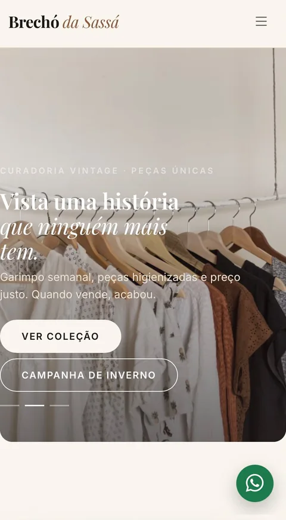
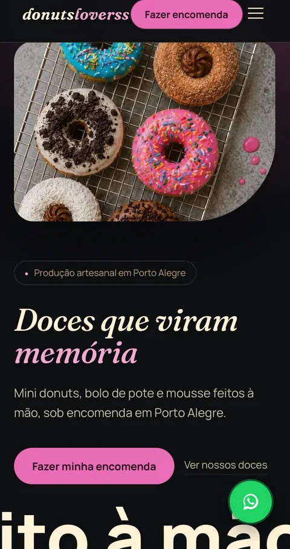
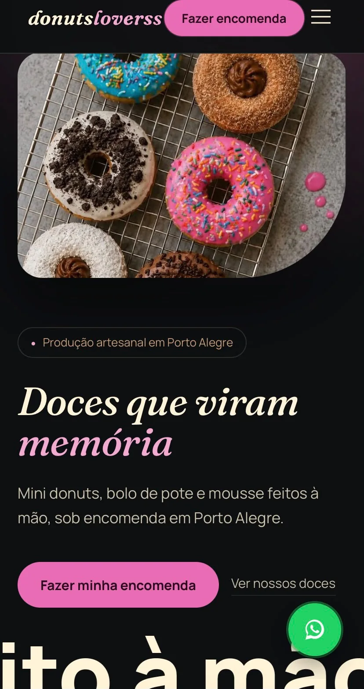
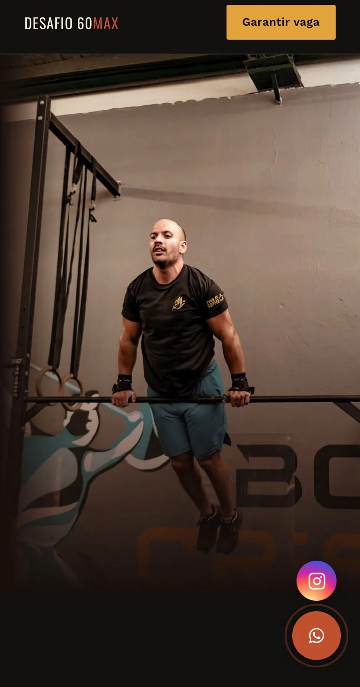
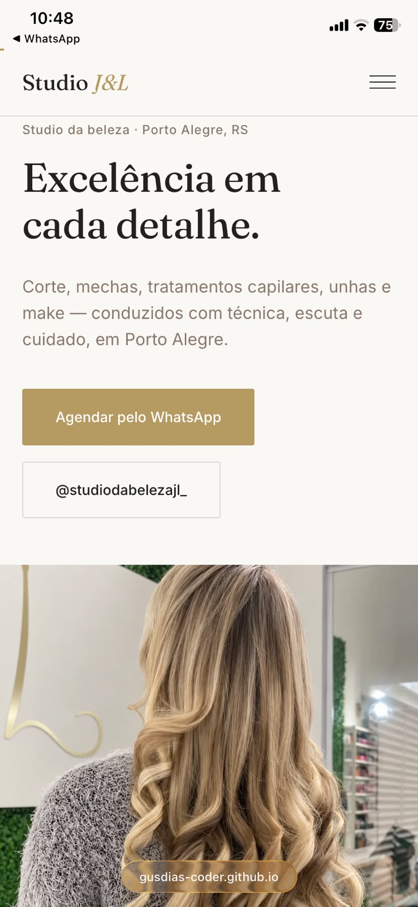
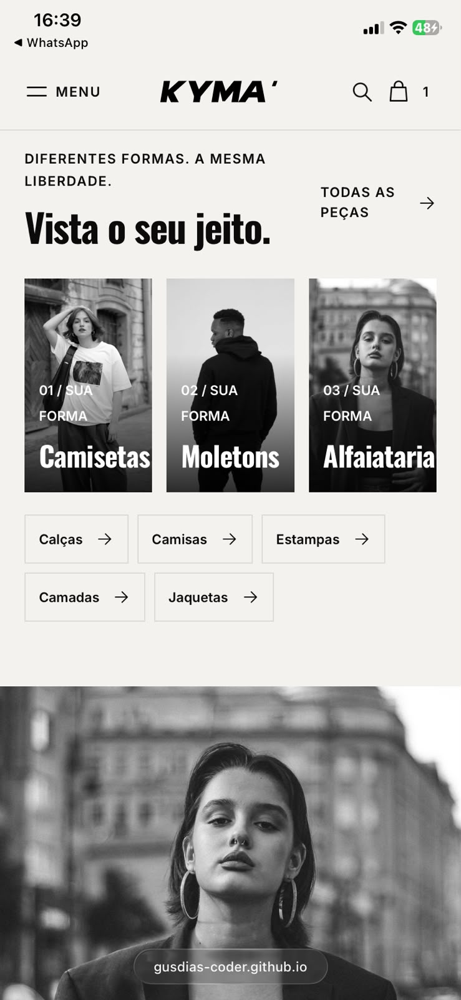

Moda & curadoria
Moda & curadoriaBrechó da Sassá
Uma vitrine online para apresentar uma curadoria de moda vintage e suas coleções.
Ver detalhesSites feitos para negócios de verdade
Eu sou Gustavo Dias. Crio sites claros, bonitos e fáceis de usar para pequenos negócios que querem mostrar melhor o que fazem.
Uma conversa simples para entender o que você precisa.


Seu trabalho é especial.
Seu site também pode ser.
Um espaço próprio para explicar seus serviços, apresentar seus produtos e ajudar as pessoas a dar o próximo passo.
01 / Trabalhos selecionados
Estes projetos mostram diferentes formas de apresentar uma marca e aproximá-la de seus clientes.
Moda & curadoriaUma vitrine online para apresentar uma curadoria de moda vintage e suas coleções.
Ver detalhes
GastronomiaDoces artesanais em destaque e um caminho simples para fazer uma encomenda.
Ver detalhes
Bem-estarUma página dedicada a explicar o desafio e orientar quem deseja participar.
Ver detalhes
Beleza & cuidadoUma apresentação institucional com informações do negócio e acesso facilitado ao contato.
Ver detalhes
ModaUma vitrine de moda com produtos organizados e imagens que destacam a identidade.
Ver detalhesImagens dos projetos reaproveitadas do portfólio original. Os links de visita aparecem nas páginas de cada projeto.
02 / Feito para você entender
Você não precisa entender de tecnologia para ter um site profissional. O projeto é pensado para explicar seu negócio com clareza e facilitar o contato.
O conteúdo e o visual ajudam as pessoas a entender o que você oferece.
Uma navegação confortável no celular, onde muita gente conhece novos negócios.
Botões de contato ajudam a pessoa interessada a chegar até você.
Você acompanha as etapas e sabe o que está sendo feito em cada momento.
03 / Como posso ajudar
O melhor formato depende do que você precisa apresentar. A gente entende isso na primeira conversa.
Para apresentar seu negócio, sua história e seus serviços em um só lugar.
Para explicar uma oferta, serviço ou campanha com uma chamada direta.
Para organizar produtos e facilitar que as pessoas encontrem o que procuram.
Não sabe qual combina com sua ideia? A gente conversa sobre isso.
04 / Sem mistério
Um processo colaborativo, com conversas claras e espaço para revisar o trabalho antes da publicação.
Conversamos sobre seu negócio, o que você precisa e quem quer alcançar.
Você recebe uma proposta com escopo, prazo, investimento e próximos passos.
Desenvolvo o site e compartilho para você conhecer, revisar e dar feedback.
Depois dos ajustes combinados, colocamos o site no ar e alinhamos os próximos cuidados.
Domínio, hospedagem, revisões e suporte são detalhados na proposta para cada projeto.
05 / Quem vai criar seu site
Sou a pessoa por trás da Site.on. Trabalho com criação de sites para transformar ideias de pequenos negócios em apresentações digitais claras e cuidadosas.
Quero que você se sinta à vontade para perguntar, entender as opções e participar das decisões do seu projeto.
Acompanhe a Site.on no Instagram06 / Perguntas frequentes
Ainda tem uma dúvida? Pode perguntar direto no WhatsApp.
O investimento depende do formato, do conteúdo e dos recursos necessários. Depois de entender sua ideia, envio uma proposta com valores e escopo definidos.
O prazo é combinado na proposta, considerando o tamanho do projeto, os materiais disponíveis e as etapas de revisão.
Não precisa ter tudo pronto para conversar. Se já tiver logo, fotos, textos ou referências, eles ajudam a entender seu negócio e planejar o que falta.
Sim. Os layouts são preparados para diferentes tamanhos de tela, com atenção à leitura e à navegação pelo celular.
O site pode ser publicado com uma estrutura técnica organizada para mecanismos de busca. Posição e visibilidade dependem também do conteúdo, da concorrência e de outros fatores; não há promessa de colocação específica.
Domínio é o endereço do site; hospedagem mantém os arquivos disponíveis. As opções, os custos e as responsabilidades são explicados antes de iniciar o projeto.
Seu próximo passo
Me conte o que você faz e o que gostaria de apresentar. A conversa começa sem compromisso.
Chamar Gustavo no WhatsApp Atendimento pelo WhatsApp · Instagram @usesite.on